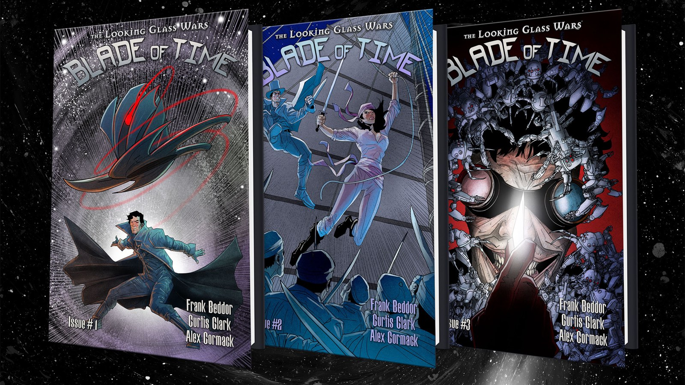

Issue One
When memory becomes a weapon…

When Grand Milliner Hatter Madigan begins suffering violent temporal fractures—his consciousness torn between past and present—he discovers someone is attacking him through time itself. Defying Queen Alyss Heart, he sets out to uncover the source while being hunted across Wonderland in this continuation of Frank Beddor's epic Looking Glass Wars saga.
Frank Beddor is the New York Times bestselling author of The Looking Glass Wars and the creator of its mythology — twenty-five years of novels, graphic novels, art, music and games built around one question: what if Wonderland was real all along?
Curtis Clark is an award-winning screenwriter and author whose comics include The Looking Glass Wars: Blade of Time, Enders, Jet Seer and Vores, alongside film and television work with Sony Pictures Television and Fremantle. He grew up on a farm in Wacousta, Michigan, and lives in Los Angeles with his wife and two children.
Alex Cormack is a Bram Stoker Award nominated illustrator whose work includes Breath of Shadows, Sea of Sorrows, Road of Bones, The Crimson Cage, Sink, Ghosts on the Water, Killing Hope, Weed Magic, and a bunch more. He lives in Vermont with his wife, son, and his two cats.
Tom Napolitano is a Bram Stoker Award winning, Eisner nominated letterer whose work includes The Joker, Detective Comics, Animal Castle, Grim, Kaya, The Closet, Lugosi, and a bunch more. He has lettered for DC, Image, Dark Horse, BOOM!, Dynamite and Humanoids since 2011.